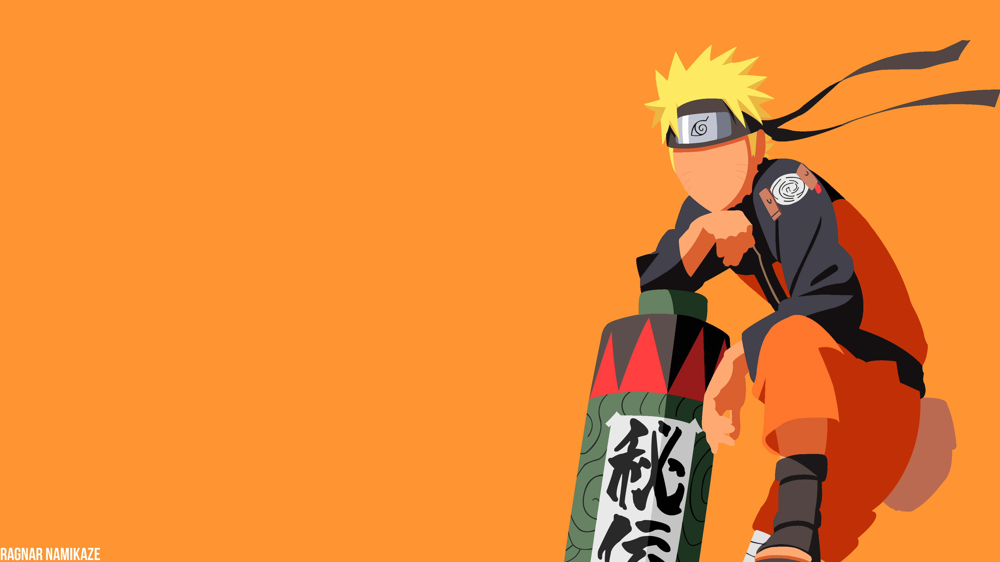
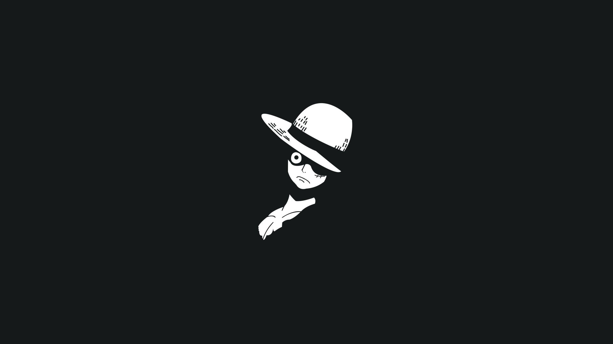
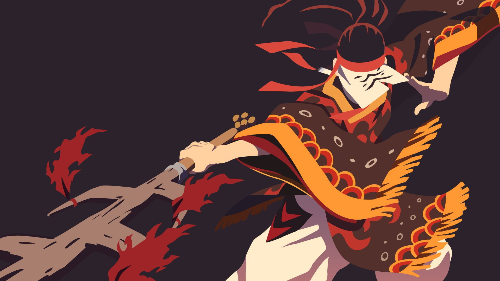
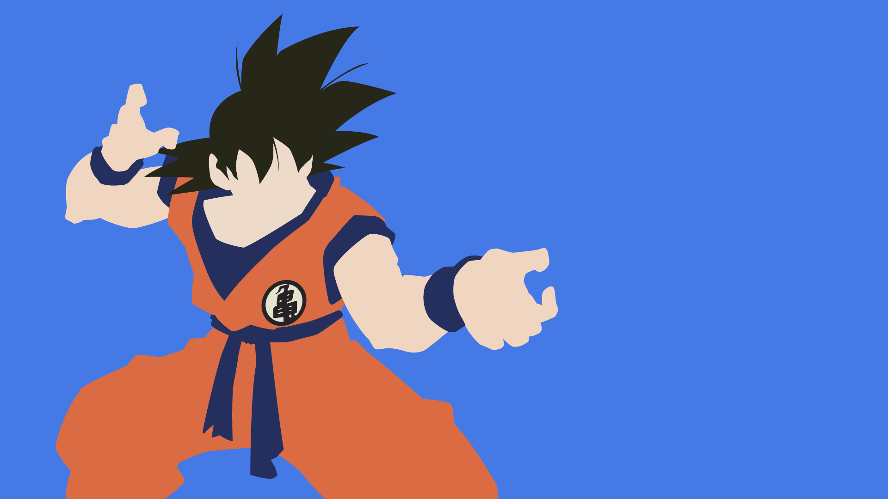
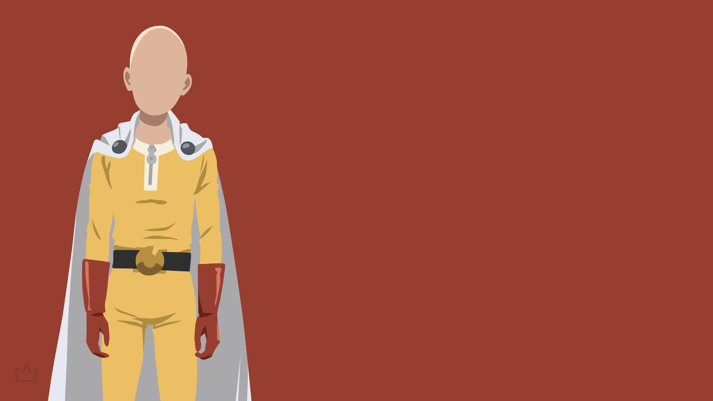

Naruto uzumaki
one of the big 3
Naruto Uzumaki (うずまきナルト, Uzumaki Naruto) is a shinobi of Konohagakure's Uzumaki clan.
He became the jinchūriki of the Nine-Tails on the day of his birth — a fate that caused him to be shunned by most of Konoha throughout his childhood.
After joining Team Kakashi, Naruto worked hard to gain the village's acknowledgement all the while chasing his dream to become Hokage.
In the following years, through many hardships and ordeals, he became a capable ninja, regarded as a hero both by the villagers, and soon after, the rest of the world, becoming known as the Hero of the Hidden Leaf (木ノ葉隠れの英雄, Konohagakure no Eiyū, literally meaning: Hero of the Hidden Tree Leaves).

Monkey D. luffy
one of the big 3
One Piece (ワンピース Wan Pīsu?) is an animated series based on the manga of the same name, produced by Toei Animation and broadcasted by Fuji Television.
Gol D. Roger was known as the Pirate King, the strongest and most infamous pirate to have sailed the Grand Line. The capture and death of Roger by the World Government brought a change throughout the world.

Kamado tanjiro
new gen anime
In Taisho-era Japan, Tanjiro Kamado is a kindhearted boy who makes a living selling charcoal.
Tanjiro Kamado is a kind-hearted and intelligent boy who lives with his family in the mountains.
However, his peaceful life is shattered when a Demon slaughters his entire family.

Goku
The greatest Anime of all times
Dragon Ball (Japanese: ドラゴンボール, Hepburn: Doragon Bōru) is a Japanese media franchise created by Akira Toriyama in 1984.
The series follows the adventures of protagonist Son Goku from his childhood through adulthood as he trains in martial arts.

Saitama
the overpowered main character
One-Punch Man (Japanese: ワンパンマン, Hepburn: Wanpanman) is a Japanese superhero franchise created by the artist ONE.
It tells the story of Saitama, a superhero who can defeat any opponent with a single punch.
ONE wrote the original webcomic version in early 2009.
On a supercontinent Earth, powerful monsters and villains have been wreaking havoc in the cities.